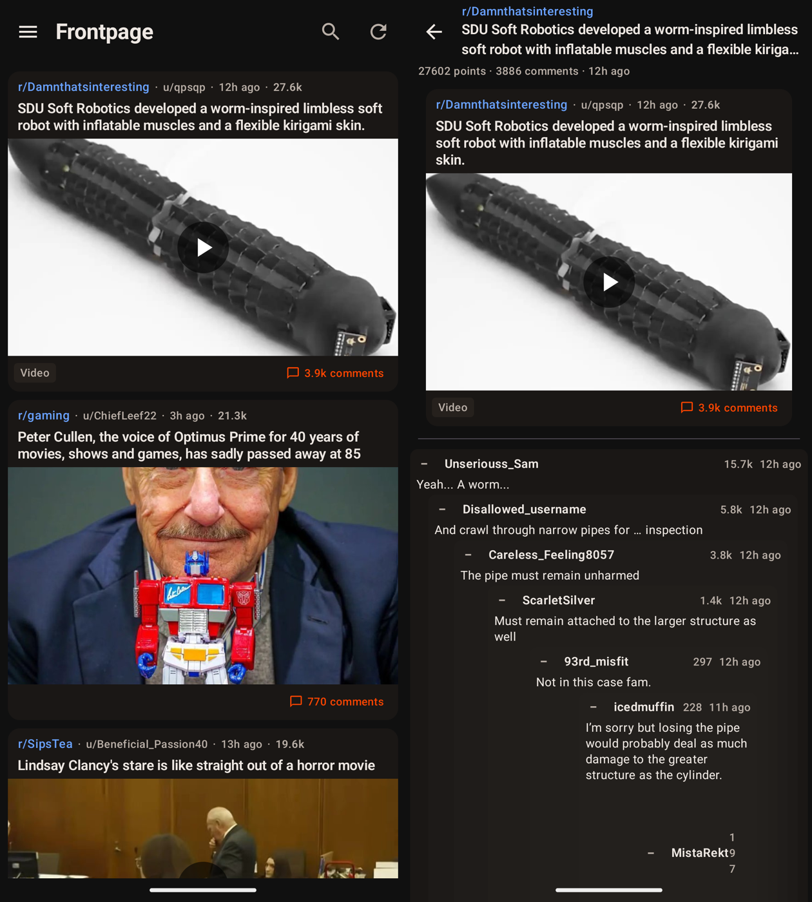

Now for Redlib
A read-only Reddit client for Android, in the spirit of the classic Now for Reddit — powered by public Redlib instances.

Download latest APK
- No Reddit account, no API keys — everything is fetched through Redlib
- Automatic instance discovery with health checks and failover
- Punches through Anubis bot checks on-device (SHA-256 proof-of-work)
- Full-screen media viewer — pinch-zoom images, videos remuxed & played locally
- Comment threads with collapse/expand
- Subreddit search & drawer history — add/remove your recent subs
- 72-hour offline mode — seen feeds, comments, and media stay browsable
Releases are date-versioned (e.g. v2026.08.27). Sideload the APK and go.